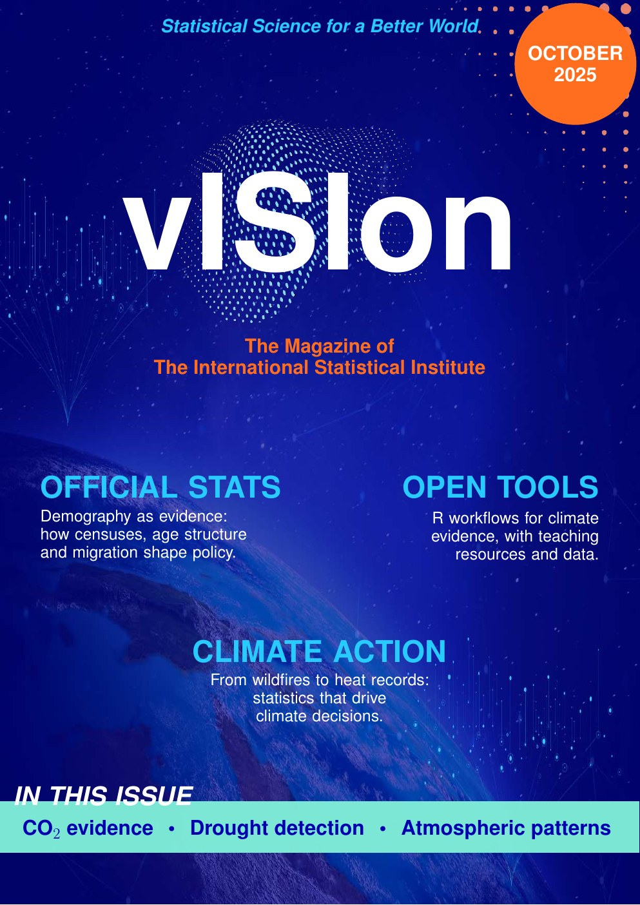

June 2026 · Vol. 1 No. 2
Data for a fairer world
SDG 10: Reduced Inequalities
Archive
Every issue is free to read and free to share. Each one centres on a single UN Sustainable Development Goal.
June 2026 · Vol. 1 No. 2
SDG 10: Reduced Inequalities

October 2025 · Vol. 1 No. 1
SDG 13: Climate Action
Issue 3 is in preparation. If you would like to contribute to it, see how to submit.